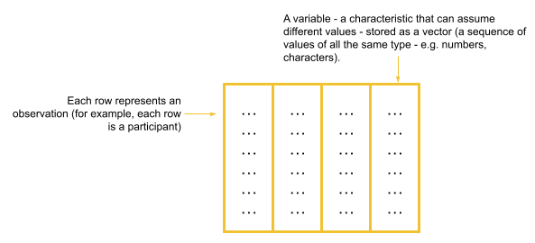
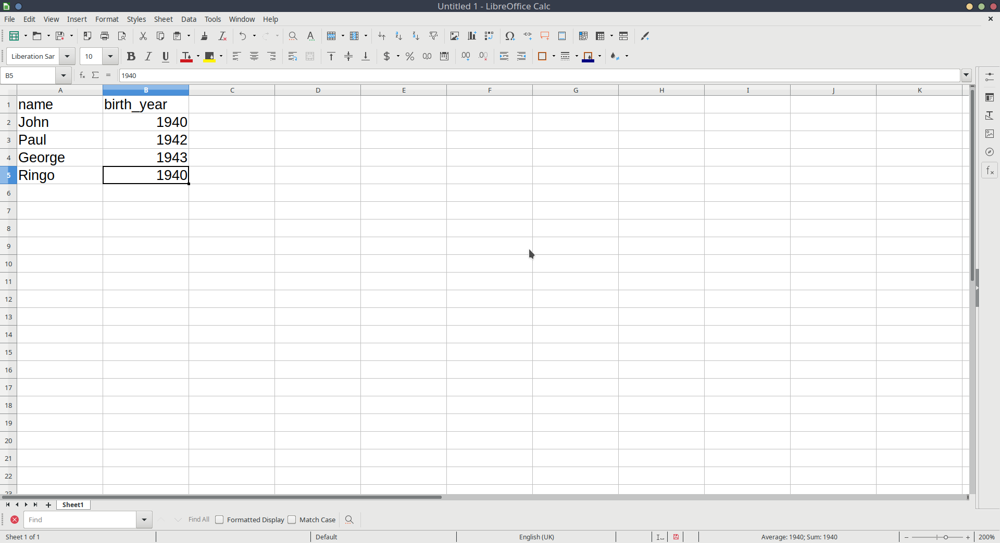
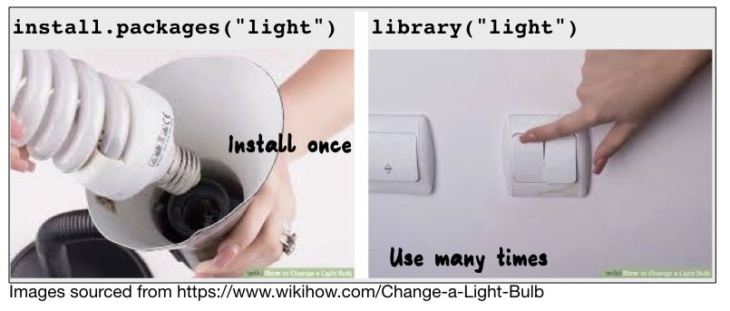
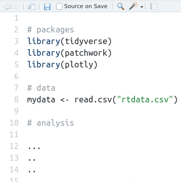

2: More R - Basic Data Skills
You are viewing an interactive version of this reading.
Please allow ~30 seconds for packages to load before code chunks can be run
Click here for the static version
This reading:
- How does R store data?
- What can R do with data?
- How can we use R to access and manipulate data?
Vectors
We’ve already seen how to assign a value to a name/symbol using <-. However, we’ve only seen how to assign a single number, e.g:
In almost all cases, the data we are working with will be more than just an individual number. We might have measured the IQ of 20 different people, in which case we have 20 numbers representing IQ scores. More commonly, we work with 2-Dimensional arrays of numbers, e.g. each row is an observation, and each column represents something we have measured.
To store a sequence of numbers into R, we can combine the values using c() and give the sequence a name. A sequence of elements all of the same type is called a vector.
As before, to view the stored content, we simply type the name of the vector:
We can perform arithmetic operations on each value of the vector.
For example, to add five to each entry:
To reiterate, vectors are sequences of elements all of the same type. A vectors does not have to be a sequence of numbers, it could be a sequence of words, such as the names of different types of animals.
Words need to be written inside quotations, e.g. “anything”, and instead of being of numeric type, we say they are characters.
You can use either double-quote or single-quote:
c("cat", "dog", "parrot", "horse")[1] "cat" "dog" "parrot" "horse" c('cat', 'dog', 'parrot', 'horse')[1] "cat" "dog" "parrot" "horse" It does not make sense to add a number to words, hence some operations like addition and multiplication are only defined on vectors of numeric type. If you make a mistake, R will warn you with a red error message.
Finally, it is important to notice that if you combine together in a vector a number and a word, R will transform all elements to be of the same type. Why? Recall: vectors are sequences of elements all of the same type. Typically, R chooses the most general type between the two. In the example below, it makes everything a character (letters) (note the " around the 4), as it is unclear how to transform “cat” into a number!
Dataframes
Now we have seen how we can store a set of values into a vector in R, we can move to thinking about data in a more intuitive way.
Typically, when we imagine “collecting data”, we imagine asking a sample of people a bunch of questions (e.g. we might ask them their height, age, hair colour etc). So we could have a vector of heights, another vector of ages, and another of hair colours.
Rather than storing all of these as separate objects, it makes a lot more sense to organise them in two dimensions, very much like a spreadsheet. In R, a collection of vectors is termed a “dataframe”
Dataframes are simply collections of vectors of the same length.
Typically, all vectors are ordered to ensure that a given row represents the characteristics of a single observation

For instance, we could imagine a dataframe containing information on the name and birth year of each member of The Beatles. The easiest way to think of this would be to have a row for each Beatle, and a column for each of their names and their birth-years. Note that each vector contains all the same type of information (the names are all strings of characters, and the birth years are all numbers).
We can, if we want to, create a dataframe inside R, by giving it a collection of vectors:
data.frame(
name = c("john","paul","george","ringo"),
birth_year = c(1940,1942,1943,1940)
) name birth_year
1 john 1940
2 paul 1942
3 george 1943
4 ringo 1940While we can manually create data like above, more often we will need to import into R some data which has been created elsewhere (like in excel, or by some software which is used to present participants with experiments, or collect responses to questionnaires).
Let’s suppose we have instead entered data in something like Microsoft Excel, or LibreOffice Calc, or whatever spreadsheet software we have available (Figure 1).

We can then save that data as a .csv file. Although R can read data when it’s saved in Microsoft/LibreOffice formats, the simplest, and most universal way to save data is as simple text, with the values separated by some character. The .csv format stands for comma separated values.1
Back in RStudio, we need to have a way of getting the information contained in that file into R’s environment, so that we can do things with it. We can do this by using the read.csv() function, and directing it to the file you just saved.
note: if you are using RStudio on a server - i.e. accessing it via a web-browser - then you will need to upload the file you just saved to the server (see the “upload” button in the Files tab in the bottom right pane of R).
read.csv("data_from_excel.csv") name birth_year
1 John 1940
2 Paul 1942
3 George 1943
4 Ringo 1940Helpful tip
If you have your text-cursor inside the quotation marks, and press the tab key on your keyboard, it will show you the files inside your project. You can then use the arrow keys to choose between them and press Enter to add the code.
There’s one more thing that we need to do, and that is to actually store this information in our environment. Currently, it is just printing out the data. We need to assign it a name:
beatles <- read.csv("data_from_excel.csv")We should now have something called “beatles” which is visible in the environment pane of RStudio (top right).
And we can print it out by simply invoking its name:
beatles name birth_year
1 John 1940
2 Paul 1942
3 George 1943
4 Ringo 1940And we can do things such as ask R how many rows and columns there are (asking for the “dimensions” using dim()):
dim(beatles)[1] 4 2This says that there are 4 members of the Beatles, and for each we have 2 measurements (name and birth-year).
To get more insight into what the data actually are, you can either use str() to see the structure:
str(beatles)'data.frame': 4 obs. of 2 variables:
$ name : chr "John" "Paul" "George" "Ringo"
$ birth_year: int 1940 1942 1943 1940Functions
We’ve just seen some use of c(), read.csv(), dim() and str().
There’s something that all these things have in common - they are functions.
Functions perform specific operations / transformations in computer programming.
They can have inputs and outputs. For example, dim() takes some data you have stored in R as its input, and gives the dimensions of the data as its output.
There are loads and loads of functions in R. This is really where the power lies. Here is a demonstration of a couple of basic ones. Hopefully you can guess what they are doing?
Getting Help on Functions
Almost all functions in R will have associated documentation describing what they do. If we don’t know what a function does, we can read the help docs by typing a question mark and then the function name, and running it in R. ?mean will bring up a little help page in the bottom-right pane of RStudio
R Packages
Alongside the basic installation of R and RStudio, there are many add-on packages which the R community create and maintain. The thousands of packages are part of what makes R such a powerful and useful tool - there is a package for almost everything you could want to do in R.
Packages are bundles of functions, code, data, documentation, etc.
To install a package onto our computer we use install.packages("package name").
Then, any time that we want to use that package we just need to load it into our current R session with library(package name).

Here we’re going to install a silly package called cowsay:
Write this code directly into the console and run it:
install.packages("cowsay")This spits out a lot of messages, before (hopefully) ending with something similar to:
…
…
* DONE (cowsay)
The downloaded source packages are in
‘/tmp/RtmpIRbMnh/downloaded_packages’
>
Now that we’ve installed it, to use it we just need to load it into our R session, by using library().
Back in your script, use this code to load the package:
library(cowsay)Which enables us to now use some of the functionality that is in that package, such as the say() function, which makes some silly art out of punctuation symbols:
say("Welcome to the USMR course!", by = "owl")
_____________________________
< Welcome to the USMR course! >
-----------------------------
\
\
/\___/\
{o}{o}|
\ v /|
| \ \
\___/_/ [ab]
| |It’s good practice to have all the packages you use for an analysis loaded at the top of your script.
A typical structure for an R script is to:
- load all the required packages
- read in the data
- conduct your analysis

We will be using these packages quite a lot in this course, so you might want to install them now, by writing install.packages("PACKAGE_NAME") in your console:
- tidyverse
- patchwork
It might take a few minutes for them to install, so just sit back and take a breather.
Checkpoint - where are you writing your code?
Hopefully, if you are following along with us, you are writing almost all of your code in a script, and not in the console. Remember: Code that you write in the console is not saved.
However, when we installed packages above, we suggested you write directly into the console.
Why? Because sometimes, for certain things, we don’t want to keep a record of that bit of code. We only ever want to install a package once, because after that first time it’s going to be installed on our computer, so we’re not going to need to run install.packages("cowsay") again.
Consider the example code below. The 2nd, 3rd, and 5th lines do absolutely nothing to our computations with x and y. They are just for our own workings. Because lines like this have no consequences on code below, our R script will have the same end-point with and without those line.
x <- 4
x
4*33
y <- 6/100
?mean
answer <- x*yIn general, the vast majority of the code you write will be in the script, and you will only use the console occasionally for quick commands that aren’t doing anything to change our analysis. For example, we don’t want to keep re-installing packages over and over again (each time we run a script), so we’ll tend to use install.packages() in the console. Similarly, when we look up the help documentation for a function (e.g. by running ?mean), we type that into the console, and not a script.
This will become second nature as you use R more and more, but it’s helpful to get into good habits early on.
Rules of thumb
- If a line of code changes something in the environment, then that code should be written in the script.
- If you clear your environment, restart R, and run your script all at once (see the section on ‘Good Habits’ in Chapter 1), it shouldn’t produce errors and should get you back to your current place
If we don’t follow the above suggestions, then our work will not be reproducible (e.g. you send your script to someone and they will get a different answer from you when they run it).
Basic Data Wrangling
Now that we’ve started to learn about vectors and dataframes, we’re going to look at reading in a bigger dataset, exploring some of the variables, and the syntax we can use to access and edit certain bits of the data.
First we’ll read in our data:
Reading data from a URL
Note that when you have a url for some data (e.g. this) you can read it in directly by giving functions like read.csv() the url inside quotation marks.
The data contains information on various characteristics of characters from Star Wars. We can print out the top of the data by using the head() function which displays the first six rows of the data by default. You could change this by saying, for example, head(data, n = 10):
(Don’t worry about the NAs for now, they are just how R tells you an entry is missing, i.e. Not Available.)
Try clicking on the data in your environment (the top right window of RStudio). It will open the data in a tab in the editor window - this is another way of looking at the data, more like you would in spreadsheet software like Microsoft Excel.
This can be time-consuming and awkward if your data file is big (i.e. lots of columns, or lots of rows, or both!).
We can take a look at how big the data is (the dimensions), using dim()
We can see that there are 75 rows and 6 columns. In this dataset, each Star Wars character is an observational unit, and there are 6 variables (things which vary between units) such as their height, species, homeworld, etc.
observations and variables
The individual entities on which data are collected are called observational units or cases. Often (but not always), these equate to the rows of a dataset.
A variable is any characteristic that varies from observational unit to observational unit (these are often the columns of the dataset)
Accessing subsets of data
What if we want to extract certain subsections of our dataset, such as specific observational units or variables? This is where we learn about two important bits of R code used to access parts of data - the dollar sign $, and the square brackets [].
The dollar sign $
The dollar sign allows us to extract a specific variable from a dataframe. For instance, we can pull out the variable named “eye_color” in the data, by using $eye_color after the name that we gave our dataframe.
Remember that each variable in a dataframe is a vector (a set of values). Once extracted, we will have a vector and not a dataframe.
The square brackets []
Square brackets are used to do what is known as indexing (finding specific entries in your data).
We can retrieve bits of data by identifying the \(i^{th}\) entry(s) inside the square brackets, for instance:
In a dataframe we have an extra dimension - we have rows and columns. Using square brackets with a dataframe needs us to specify both:
Let’s look at some examples:
- Specifying row number and column number:
- If we leave either rows or columns blank, then we will get out all of them:
- There are is another way to identify column - we can use the name in quotation marks:
- We can also ask for multiple rows, or multiple columns, or both! To do that, we use
c():
- And we can specify a sequence using the colon,
from:to: 2
- We can even use the two accessors in combination:3
The dollar sign $
Used to extract a variable from a dataframe:
dataframe$variable
The square brackets []
Used to extract parts of an R object by identifying rows and/or columns, or more generally, “entries”. Left blank will return all.
vector[entries]dataframe[rows, columns]
Accessing by a condition
We can also do something really useful, which is to access all the entries in the data for which a specific condition is true.
Let’s take a simple example to start:
somevalues <- c(10, 10, 0, 20, 15, 40, 10, 40, 50, 35)To only select values which are greater than 20, we can use:
Unpacking: somevalues[somevalues > 20]
First, let’s look at what somevalues > 20 does. It returns TRUE for the entries of somevalues which are greater than 20, and FALSE for the entries of somevalues that are not (that is, which are less than, or equal to, 20.
This statement somevalues > 20 is called the condition.
Now consider putting that sequence of TRUEs and FALSEs inside the square brackets in somevalues[]. This returns only the entries of somevalues for which the condition is TRUE.
So what we’re doing is using a condition inside the square brackets to return all the values for which that condition is TRUE.
And we’re being super efficient, because we don’t want to write out TRUEs and FALSEs all day, so we just give the conditional question inside the brackets directly:
We can extend this same logic to a dataframe. Let’s suppose we want to access all the entries in our Star Wars data who have the value “Droid” in the species variable. To work out how to do this, we first need a line of code which defines our condition - one which returns TRUE for each entry of the species variable which is “Droid”, and FALSE for those that are not “Droid”.
We can use the dollar sign to pull out the species variable:
And we can ask R whether each value is equal to “Droid”
Remember: in R, we ask whether something is equal to something else by using a double-equals, ==. A single equal sign would be wrong, as it denotes assignment.
Finally, we can use this condition inside our square brackets to access the entries of the data for which this condition is TRUE:
I would read the code above as:
“In the starwars2 dataframe, give me all the rows for which the condition starwars2$species==”Droid” is TRUE, and give me all the columns.”
More complex conditions
Thinking back to Chapter 1 when we first introduced R, we talked briefly about “logical operators”. Specifically, the operators &, |, and ! (for “and”, “or”,” and “not”), will come in handy now.
For instance, we can now extract all those in the dataset which are humans and taller than 190cm:
translation: “In the starwars2 dataframe, give me all the rows for which the conditions starwars2$species==”Human” AND starwars2$height > 190 are both TRUE, and give me all the columns.”
Or we can extract all those in the dataset which are either droids or ewoks:
translation: “In the starwars2 dataframe, give me all the rows for which the either of conditions starwars2$species==”Droid” OR starwars2$species==“Ewok” is TRUE, and give me all the columns.”
Editing specific entries
Now that we’ve seen a few ways of accessing sections of data, we can learn how to edit them! One of the most common reasons you will need to modify entries in your data is in data cleaning. This is the process of identifying incorrect / incomplete / irrelevant data, and replacing / modifying / deleting them.
Above, we looked at the subsection of the data where the species variable had the entry “Droid”. Some of you may have noticed earlier that we had some data on C3PO. Are they not also a droid?
(Looks pretty Droid-y to me! disclaimer: I know nothing about Star Wars 🙂 )
Just as we saw above how to access specific entries, e.g.:
We can change these by assigning them a new value (remember the <- symbol). In doing so, we overwrite4 the entry in the 2nd row and 6th column of the data (starwars2[2,6]) with the value “Droid”.
Editing entries via a condition
We saw above how to access parts of data by means of a condition, with code such as:
translation: “In the starwars2 dataframe, give me all the rows for which the condition starwars2$homeworld==”Naboo” is TRUE, and give me all the columns.”
What if we wanted to modify it so that every character from “Naboo” was actually of species “Nabooian”?
We can do that in a number of ways, all of which do the same thing - namely, they access parts of the data and assign them the new value “Nabooian”.
The lines of code below all do exactly that, in different ways:
translation: In the starwars2 data, give the rows for which condition starwars2$homeworld==“Naboo” is TRUE, and select only the “species” column. Assign to these selected entries the value “Nabooian”.
translation: In the starwars2 data, give the rows for which condition starwars2$homeworld==“Naboo” is TRUE, and select only the 6th column. Assign to these selected entries the value “Nabooian”.
translation: Extract the species variable from the starwars2 data (it’s a vector). Pick the entries for which the condition starwars2$homeworld==“Naboo” is TRUE. Assign to these selected entries the value “Nabooian”.
Cautionoptional: a little extra…
In a similar way, we could have changed C-3PO to a Droid without ever having to know what row of the data they were in!
translation: for the row(s) where the name variable in starwars2 is equal to “C-3PO”, in the species variable we assign that entry to be “Droid”
Adding/Changing a variable
Another thing we might want to do is change a whole variable (a whole column) in some way.
The logic is exactly the same, for instance, we can take the variable “height” from the dataframe “starwars2”, dividing it by 100 via starwars2$height / 100, and then assign the result to the same variable name in the data, i.e. we overwrite the column:
We could instead have added a new column named “height_m” with those values if we did not want to overwrite “height”:
This would have left the “height” variable as-is, and created a new one called “height_m” which was the values in “height” divided by 100.
Removing rows or columns
Lastly, we might want to change the data by removing a row or a column. Again, the logic remains the same, in that we use <- to assign the edited data to a name (either a new name, thus creating a new object, or an existing name, thereby overwriting that object).
For instance, notice that the 35th and 75th rows of our data probably aren’t a valid observation - I’m reasonably sure that Marge and Homer Simpson never appeared in Star Wars:
We can remove a certain row(s) by using a minus sign - inside the square brackets
And we can simply re-use the name “starwars2” to overwrite the data and make this change take effect (rather than just print out the result, which the code above did):
(now, in the environment pane of Rstudio, the object named “starwars2” will say 73 observations, rather than 75, which it had before - we’ve removed the 2 rows)
The same logic applies for columns:
translation: Create a new object called “anonymous_starwars2” and assign it to the “starwars2” dataframe minus the 1st column (the “name” column)
We can see that the dimensions of this new data are different:
Footnotes
To save as .csv in Microsoft Excel, we go to File > Save as, and then in the Save as Type box, choose to save the file as CSV (Comma delimited)↩︎
The colon operator,
from:to, creates a vector from the valuefromto the valuetoin steps of 1. For instance,1:6is the same asc(1,2,3,4,5,6).↩︎Note: When we do this, we don’t have the comma inside the square brackets. When we use the
$to pull out a variable, such asstarwars2$name, we no longer have a dataframe.starwars2$namedoesn’t have rows and columns, it just has a series of values - it’s a vector! So when you are using[]with a vector (1 dimension) rather than a dataframe (2 dimensions), you don’t specify[rows, columns], but simply[entry].↩︎you could think of this as replacing / overwriting / reassigning the entry↩︎